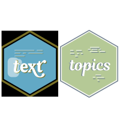

topics is an R-package enabling Differential Language Analysis using words, phrases and topics.
When using this package, please cite:
Ackermann L., Zhuojun G. & Kjell O.N.E. (2024). An R-package for visualizing text in topics. https://github.com/theharmonylab/topics. DOI:zenodo.org/records/11165378.
text and topics
The topics-package supports the www.r-text.org in analysing and visualizing topics. In the text-package you can visualise BERTtopics based on techniques from the topics package.

Installation
The topics package uses JAVA, which is another programming language. Please start by downloading and installing it from www.java.com/en/download/. Then open R and run:
install.packages("devtools")
devtools::install_github("theharmonylab/topics")
# if you run in to any installation problem, try installing rJava first.
# Before open the library, consider setting this option (can increase 5000); without it the code may ran out of memory
options(java.parameters = "-Xmx5000m")Overview
The pipeline is composed of the following steps:
1. Data Preprocessing
The data preprocessing converts the data into a document term matrix (DTM) and removes stopwords, punctuation, etc. which is the data format needed for the LDA model.
2. Model Training
The model training step trains the LDA model on the DTM with a number of iterations and predefined amount of topics.
3. Model Inference
The model inference step uses the trained LDA model to infer the topic term distribution of the documents.
4. Statistical Analysis
The analysis includes the methods like linear regression, binary regression, ridge regression or correlation to analyze the relationship between the topics and the prediction variable. It is possible to control for a number of variables and to adjust the p-value for multiple comparisons.
5. Visualization
The visualization step creates wordclouds of the significant topics found by the statistical analysis.


## Usage In an example where the topics are used to predict the PHQ-9 score, the pipeline can be run as follows:
1. Data Preprocessing
To preprocess the data, run the following command:
data <- read.csv("data.csv")
dtm <- topicsDtm(data = data$text)
# Check the results from the dtm and refine stopwords and removal rates if necessary
topicsDtmEval(dtm)2. Model Training
To train the LDA model, run the following command:
model <- topicsModel(dtm = dtm,
num_topics = 20,
num_iterations = 1000)
3. Model Inference
To infer the topic term distribution of the documents, run the following command:
preds <- topicsPreds(model = model,
data = data$text)4. Statistical Analysis
To analyze the relationship between the topics and the prediction variable, run the following command:
test <- topicsTest(model = model,
data = data,
preds = preds,
pred_var = "phq9",
control_vars = c("age",..),
test_method = "linear_regression")5. Visualization
To visualize the significant topics as wordclouds, run the following command:
topicsPlots(model = model,
test = test)